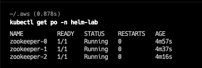
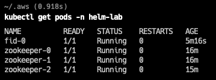

Helm
Before you start
- Helm is installed
- A running kubernetes cluster (minikube, EKS, AKS, GKE, k3s, k8s)
- kubectl is configured to access the right cluster. Verify by running the following commands:
kubectl cluster-info
kubectl get nodes
Helm Deployment
The radiantone helm repository is hosted at https://radiantlogic-devops.github.io/helm
Add radiantone repository
- Run the command below to add
radiantonerepo
helm repo add radiantone https://radiantlogic-devops.github.io/helm
Verify
- To verify that
radiantonerepo is added, run the command below
helm repo list
In the output you should see radiantone added along with other repositories if you have any
(Recommended) To update the repo
helm repo update
helm templates
To view the kubernetes manifest file generated by helm, run the commands below. This will not deploy the application, but only generates the manifest.
helm template zookeeper radiantone/zookeeper
helm template fid radiantone/fid
Installing FID/Zookeeper
Creating Namespace
- Run the command below to create a new namespace to deploy FID/Zookeeper
kubectl create namespace helm-lab
Verify:
- To verify if the namespace has been created, run the command below
kubectl get namespace
- You should see "helm-lab" in the output
Installing Zookeeper
- Run the commnd below to install a 3 node zookeepr ensemble
helm install --namespace=helm-lab zookeeper radiantone/zookeeper
- The above command deploys zookeeper (default with replicaCount=3)
- You will see following response printed to the console
helm install --namespace=helm-lab zookeeper radiantone/zookeeper
NAME: zookeeper
LAST DEPLOYED: <date>
NAMESPACE: helm-lab
STATUS: deployed
REVISION: 1
NOTES:
1. Get the application URL by running these commands:
export POD_NAME=$(kubectl get pods --namespace helm-lab -l "app.kubernetes.io/name=zookeeper,app.kubernetes.io/instance=zookeeper" -o jsonpath="{.items[0].metadata.name}")
echo "Visit http://127.0.0.1:8080/commands to use your application"
kubectl --namespace helm-lab port-forward $POD_NAME 8080:8080
Verify
- To verify if zookeeper has been deoployed successfully, run the command below
kubectl get pods -n helm-lab
- You will see three zookeeper pods "zookeeper-0/1/2"

List Zookeeper releases
- To list the zookeeper releases, run the command below
helm list --namespace=helm-lab
Installing FID
Install FID
Using values.yaml file
Create a file called myfid.yaml with the following content
image:
tag: "7.4.9"
fid:
license: "<FID cluster license>"
rootPassword: "test1234"
Replace the "FID cluster license" with your license.
Run the following command (use --dry-run option to validate the kubernetes manifest)
helm install --namespace=helm-lab fid radiantone/fid -f myfid.yaml
Using --set command (not recommended)
helm install --namespace=helm-lab fid radiantone/fid \
--set fid.license="<FID cluster license>" \
--set fid.rootPassword="test1234"
IMPORTANT NOTE : Curly brackets in the license key must be escaped --set fid.license="\{rlib\}xxx"
Run the following command
NAME: fid
LAST DEPLOYED: <date>
NAMESPACE: helm-lab
STATUS: deployed
REVISION: 1
NOTES:
1. Get the Control Panel URL by running these commands:
kubectl --namespace helm-lab port-forward fid-ext 7070:7070 8089:8089
echo "Visit http://127.0.0.1:7070 to use your application"
2. Login to the Control Panel using these credentials
kubectl get secret/rootcreds-fid --namespace helm-lab -o jsonpath="{.data.fid-root-username}" | base64 -d
kubectl get secret/rootcreds-fid --namespace helm-lab -o jsonpath="{.data.fid-root-password}" | base64 -d
Verify
- To verify if fid has been deployed successfully, run the command below
kubectl get pod -n helm-lab
-
You will see fid pod
fid-0

-
To view logs
kubectl logs -f fid-0 -n helm-lab
Accessing Control Panel
- To access the control panel run the command below
kubectl port-forward svc/fid-ext -n helm-lab 7070
Access the control panel at http://localhost:7070
The default username/password is
cn=Directory Manager
test1234
Accessing LDAP/ADAP Service
- To access the LDAP/ADAP service run the command below
kubectl port-forward svc/fid-app -n helm-lab 2389 8089
Access the LDAP service at ldap://localhost:2389 from your LDAP browser
Access the ADAP service at http://localhost:8089
The default username/password is
cn=Directory Manager
test1234
Scaling Up FID
Add a new node to the cluster
Using value.yaml file
Update myfid.yaml file and set replicaCount as 2. Make sure other values are unchanged.
replicaCount: 2
fid:
license: "<FID cluster license>"
rootPassword: "test1234"
Run the command below (use --dry-run option to verify the changes)
helm upgrade --install --namespace=helm-lab fid radiantone/fid -f myfid.yaml
Using --set command (not recommended)
**Note: When using upgrade with --set option, all previously overridden settings must be passed, else it will overwrite with default values.
helm upgrade --namespace=helm-lab fid radiantone/fid --set replicaCount=2 \
--set fid.license="<FID cluster license>" \
--set fid.rootPassword="test1234"
Verify
- To verify if fid has been deployed successfully, run the command below
kubectl get pods -n helm-lab
- You will see 2 fid pods
fid-0 fid-1
List FID releases
- To list the fid releases, run the command below
helm list --namespace=helm-lab
Advanced
Update FID version (optional)
- The FID cluster must be running at least 2 nodes to update the version
- To upgrade an existing or deployed radiantone release, run the below command
Using value.yaml file
Update myfid.yaml file and set image.tag as 7.4.10. Make sure other values are unchanged.
image:
tag: "7.4.10"
replicaCount: 2
fid:
license: "<FID cluster license>"
rootPassword: "test1234"
Run the command below (use --dry-run option to verify the changes)
helm upgrade --install --namespace=helm-lab fid radiantone/fid -f myfid.yaml
Using --set command (not recommended)
**Note: When using upgrade with --set option, all previously overridden settings must be passed, else it will overwrite with default values.
helm upgrade --namespace=helm-lab fid radiantone/fid --set image.tag=7.4.1 \
--set image.tag=7.4.10 \
--set replicaCount=2 \
--set fid.license="<FID cluster license>" \
--set fid.rootPassword="test1234"
NOTE: Check for the latest image releases if the new tag is available here
Cleanup
- To remove the Zookeeper/FID helm deployments run the commands below
Removing FID deployment
helm uninstall --namespace=helm-lab fid
Verify
- To verify if the fid depoloyment has been deleted/removed run the command below
kubectl get all -n helm-lab
You should not see any fid pods, move to the next step
Removing Zookeeper Deployment
- To remove Zookeeper deployment run the command below
helm uninstall --namespace=helm-lab zk
Verify
- To verify if the fid depoloyment has been deleted/removed run the command below
kubectl get all -n helm-lab
You should not see any zookeeper pods.
Delete Namespace
- To delete the namespace that was created, run the command below
kubectl delete namespace helm-lab
Verify
- To verify if namespace has been deleted, run the command below
kubectl get namespace
You should not find the "helm-lab" in the list of namespaces.